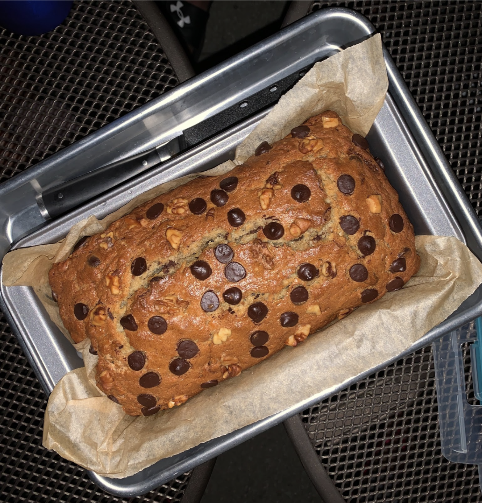

Double Chocoloate Cookies

My daughter learned to make these cookies at a baking camp at Zingermanns and has tweaked the recipe to fit the taste buds of her siblings. They are extremely sugary so the salt helps to balance it. Note, these cookies are best eaten very quickly.
Ingredients
- Unsalted butter
- Granulated Sugar
- Packed light or dark brown sugar
- Large egg
- Pure vanilla extract
- Semi-sweet chocolate chunks (melted)
- All-purpose flour
- Natural unsweetened cocoa powder
- Baking Soda
- Salt
- Semi-sweet chocolate chunks
Chocolate Chip Banana Bread
This is a tried-and-tested recipe that I have used numerous times for making the perfect chocolate chip banana bread! Not only does it help utilize the bananas that have slowly overripened at the back of the fridge, it ends up creating an incredibly delicious, and relatively healthy, dessert.
Ingredients
- Unsalted butter
- Granulated Sugar
- Eggs
- Vanilla extract
- Bananas
- All-purpose flour
- Baking soda
- Salt
- Semi-sweet chocolate chips
Chicken Curry

This is a recipe that I have used for years to make a delicious chicken curry. It is a great recipe for a cold winter day, and is a great way to use up any leftover chicken that you may have. It is also a great recipe to make in bulk and freeze for later!
Ingredients
- Chicken
- Onion
- Garlic
- Ginger
- Tomatoes
- Yogurt
- Spices
- Oil
Chicken Tikka Masala

This is a recipe that I have used for years to make a delicious chicken tikka masala. It is a great recipe for a cold winter day, and is a great way to use up any leftover chicken that you may have. It is also a great recipe to make in bulk and freeze for later!
Ingredients
- Chicken
- Onion
- Garlic
- Ginger
- Tomatoes
- Yogurt
- Spices
- Oil
Pancake

This is a recipe that I have used for years to make a delicious pancake. It is a great recipe for a cold winter day, and is a great way to use up any leftover chicken that you may have. It is also a great recipe to make in bulk and freeze for later!
Ingredients
- Chicken
- Onion
- Garlic
- Ginger
- Tomatoes
- Yogurt
- Spices
- Oil